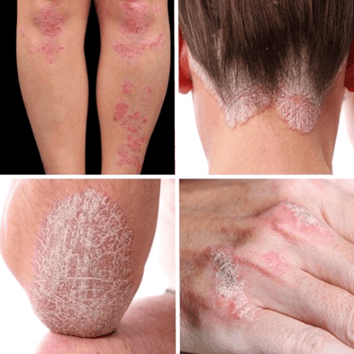
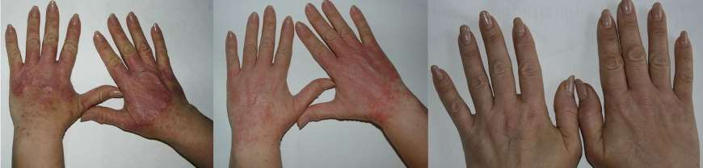

Una svolta rivoluzionaria! Diciamo NO alla psoriasi!
La psoriasi è una malattia della pelle associata a un'accelerazione della divisione e del ricambio cellulare della pelle. Le manifestazioni cutanee più comuni della psoriasi sono macchie e papule rosse, placche bianco-argentee e intensa desquamazione della pelle. Di solito le macchie compaiono per prime, poi si trasformano in papule e quindi in placche argentee. Queste lesioni possono avere dimensioni variabili e localizzarsi principalmente sul cuoio capelluto, sulla schiena, sulla nuca, sulle mani, sulle ginocchia e sui piedi.
La psoriasi può insorgere a qualsiasi età, ma più spesso si manifesta a 20-30, o 50-60 anni. Tra le caratteristiche comuni della malattia è la comparsa improvvisa di arrossamenti associati alla presenza di chiazze squamose, un'anamnesi familiare di psoriasi, una recente infezione da streptococco alla gola o un' infezione virale, l'assunzione di farmaci antimalarici, oppure un trauma o un forte stress.
Sebbene non sia una malattia contagiosa, le persone affette da psoriasi sono spesso emarginate ed escluse dalla società, discriminate perché la loro pelle ha un aspetto diverso. L'84% delle persone affette da psoriasi soffre di umiliazioni di vario tipo.
La psoriasi a placche classica si manifesta con pelle arrossata, pruriginosa caratterizzata da un'eccessiva desquamazione. Le lesioni compaiono sul lato esterno delle articolazioni e sul cuoio capelluto. La maggior parte dei pazienti si vergogna di queste placche, indossa indumenti chiusi ed evita di esporre le aree colpite.
Fino al 76% dei pazienti affetti da psoriasi nota la comparsa di nuove placche in sito della lesione o in sede di traumi dopo 7-14 giorni: si tratta del fenomeno di Koebner. In alcuni casi è reversibile, ma più spesso le placche rimangono per sempre. Fino al 20% dei pazienti affetti da psoriasi soffre di infiammazioni articolari - l'artrite psoriasica - che si accompagnano al dolore insopportabile, alla rigidità (riduzione dell'ampiezza di movimento) e alle deformazioni.
Abbiamo parlato con Elia (45 anni) che descrive come questa malattia abbia cambiato la sua vita e la sua disperazione.
“Conducevo una vita soddisfacente e felice, avevo figlia e marito e un lavoro che amavo. Dirigevo un negozio di abbigliamento, non avevo problemi di denaro. Tuttavia, quando ho scoperto che mia figlia aveva una grave malattia, tutto è cambiato. Seguì un periodo terribile: trattamenti e interventi chirurgici… La situazione ebbe un impatto negativo anche su di me.
Dopo qualche mese, il mio cuoio capelluto ha iniziato a prudere, e in seguito si sono formate chiazze di pelle ispessita, squamosa e arrossata. Poi ho notato che tutte queste placche squamose sono diventate più grandi. Così, ho scoperto di avere la psoriasi...
Ho iniziato a provare diversi rimedi per la psoriasi: creme, spray, capsule e unguenti... Ho fatto ricorso anche ai metodi alternativi. Quali sono stati i risultati? Praticamente nessuno! Anzi, le mie condizioni peggioravano sempre di più... La malattia cominciò a condizionare maggiormente la mia vita e il mio senso di sicurezza in me. Mi vergognavo del mio aspetto e diventavo ogni giorno più irritabile e aggressiva.
La mia famiglia e i miei amici mi evitavano, così come la gente per strada. Ho pensato che fosse contagioso, così ho deciso di rivolgermi al nostro medico di famiglia. Egli ha confermato la diagnosi della psoriasi: ha detto che era probabile che me la sia procurata a causa di stress e troppi impegni degli ultimi mesi. E poi? Non c'era tempo di riflettere e fare delle ricerche sulla mia condizione, così ho comprato la crema prescritta dal medico. Ma purtroppo non ha dato i risultati desiderati nemmeno quella.
Da allora sono passati diversi anni e mia figlia, grazie a Dio, è guarita. Tuttavia, il mio problema della psoriasi non è scomparso. Ho provato molti metodi diversi, ma nessuno mi ha permesso di liberarmi della patologia o di raggiungere una remissione prolungata... Finché 4 mesi fa non ho partecipato a un incontro di beneficenza dedicato alle malattie autoimmuni. Lì è stato presentato un nuovo prodotto per il trattamento della psoriasi, la crema gel .
Sono rimasta impressionata dai risultati di coloro che hanno utilizzato questo prodotto e lo consigliavano con molta sicurezza. Anche una famosa esperta in dermatologia, la dott.ssa Luna Bruni ha confermato che è un prodotto rivoluzionario che ha dimostrato risultati eccellenti già dopo il primo ciclo di trattamento. Il prodotto è composto esclusivamente da ingredienti naturali al 100% (estratto di betulla e di chaga, olio di noce di macadamia, squalene) e ha nella composizione due moderni e innovativi complessi quali Biophilic™ H MB e SK-INFLUX® Evolve MB. La crema-gel ha inoltre proprietà antimicrobiche, antinfiammatorie e antiossidanti, che favoriscono la rigenerazione cutanea.
Ho chiesto dove potevo acquistare e uno dei rappresentanti del prodotto mi ha dato il link al sito ufficiale del produttore. Ho ordinato subito il ciclo di trattamento completo di , dato che il prezzo era molto conveniente. Ho ricevuto la crema gel qualche giorno dopo e ho iniziato a usarla. Dopo solo una settimana ho notato i primi cambiamenti: le placche si erano ridotte, alcune croste sul cuoio capelluto erano guarite. E dopo aver finito il ciclo di trattamento completo, le croste pruriginose sono scomparse del tutto.
So che è difficile crederci. Ma in base alla mia esperienza personale, ha fatto un miracolo. Avevo già perso la speranza di liberarmi di tutte le croste e le squame sulla pelle e non pensavo che avrei mai più indossato gonne corte o bikini. Sognavo di riavere il mio corpo pulito e bello. E alla fine ho raggiunto il mio obiettivo! Ho trovato il rimedio giusto e ho sconfitto la psoriasi!
Ho recentemente acquistato sul sito ufficiale con lo sconto del -50% - per il mantenimento del risultato! Solo sul sito ufficiale troverete ORIGINALE. Non ordinatelo da nessun'altra parte, perché ci sono molti falsi online che possono essere addirittura dannosi.”
